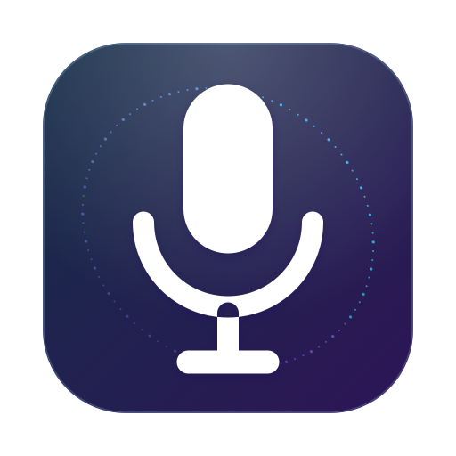

Local speech
Whisper or Parakeet
Audio stays local. Whisper prioritizes bilingual accuracy; Parakeet prioritizes speed on clean speech.

VocaretSpeak. Release. Keep moving.
Hold one shortcut and speak. Vocaret inserts the result where you are already working—local by default, live through Soniox when you choose it.
macOS 14.4+ · Apple Silicon · Apache-2.0
Example live transcript
Seventeen seconds: hold the shortcut, watch the transcript arrive line by line in the floating recorder, then choose whether the work happens on your Mac or through the paid streaming API.
The overlay never steals focus. Your cursor stays in the app where the words belong.
Press and hold ⌃⌥D. A quick tap can toggle recording instead.
Watch up to four lines of live text with Soniox, or keep every sample local.
The transcript is inserted at your cursor. If insertion fails, it is copied.
Speech recognition and formatting are separate choices. Keep either on this Mac, or opt into the cloud for live words or faster cleanup.
Audio stays local. Whisper prioritizes bilingual accuracy; Parakeet prioritizes speed on clean speech.
Use your own regional project key. Settings shows the exact current-month stt-rt-v5 cost from Soniox.
Formats text privately through llama.cpp. The optional model download is about 2.4 GB and works offline.
Sends transcript text—not audio—to OpenAI for fast formatting. It uses your API key and falls back to the original text.
Vocaret is distributed as source. The install script builds, places, and launches ~/Applications/Vocaret.app.
git clone https://github.com/HonzaCuhel/vocaret.gitcd vocaret./scripts/build_app.sh --installVocaret lives in the menu bar. Open its window only for history, meetings, the speaking coach, and settings.
Soniox Live: create a project, copy its API key, then open Settings → Transcription → Soniox Live. Match the region to the key: a US key cannot use the EU endpoint.
Add an OpenAI key under Settings → AI cleanup. Requests cost $0.05 / 1M input and $0.40 / 1M output tokens; failures keep the raw transcript.
Read the OpenAI model details